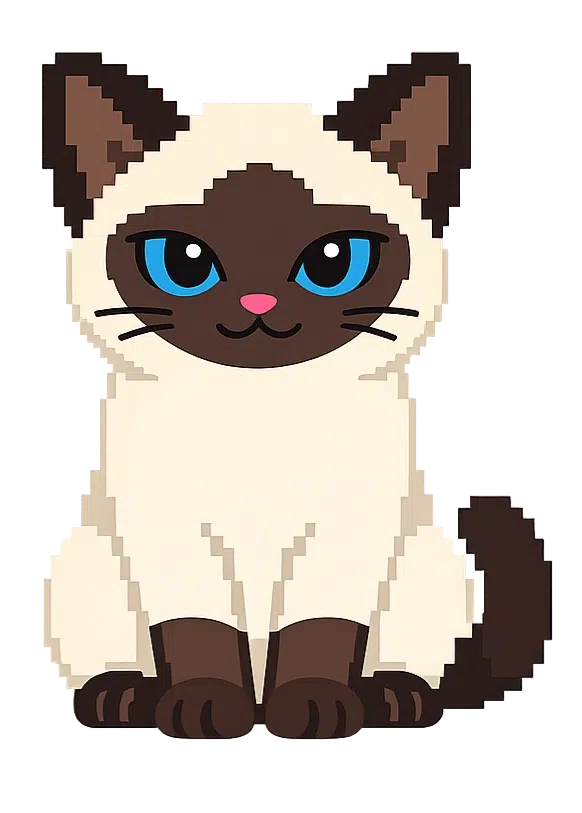

Weekly Stats
Siamese Cat Gatekeeper
0
sessions this week
—
best day
—
avg focus score
—
goal days
Last 7 Days
Sessions
Today
Focus Score Guide
≥ 80% — Great
≥ 50% — OK
< 50% — Needs work

No sessions recorded yet.
Complete your first work session to see stats here.